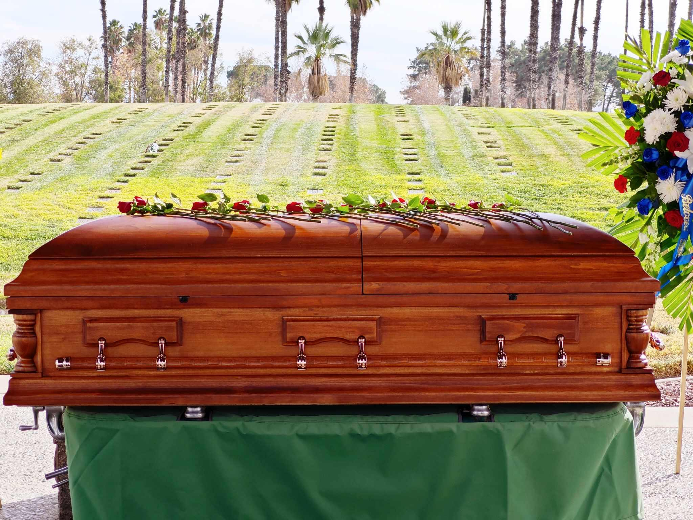
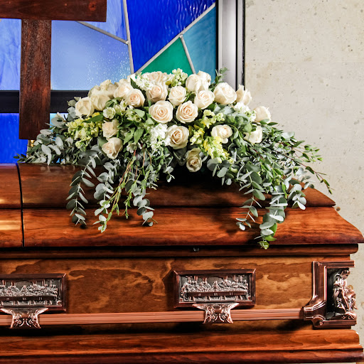
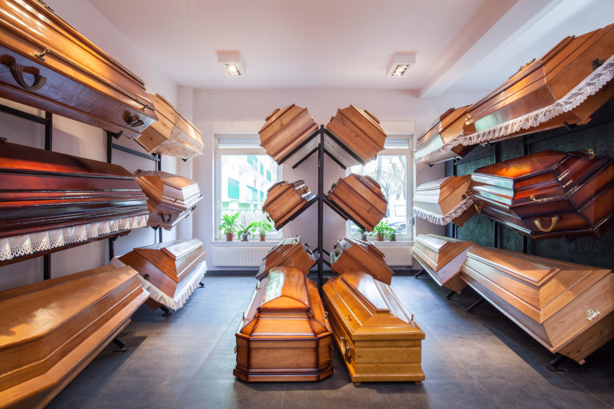
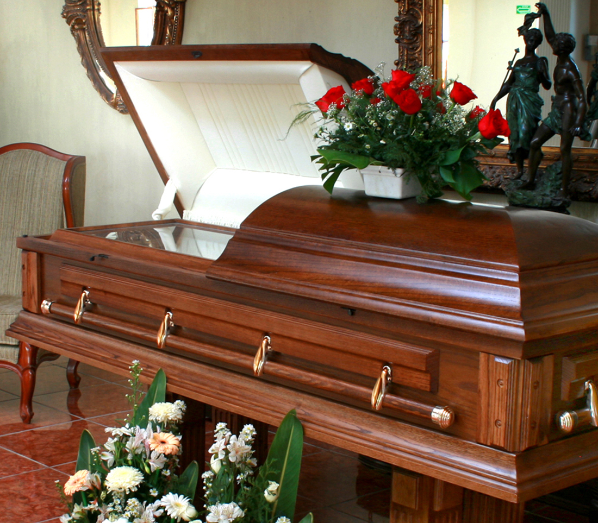
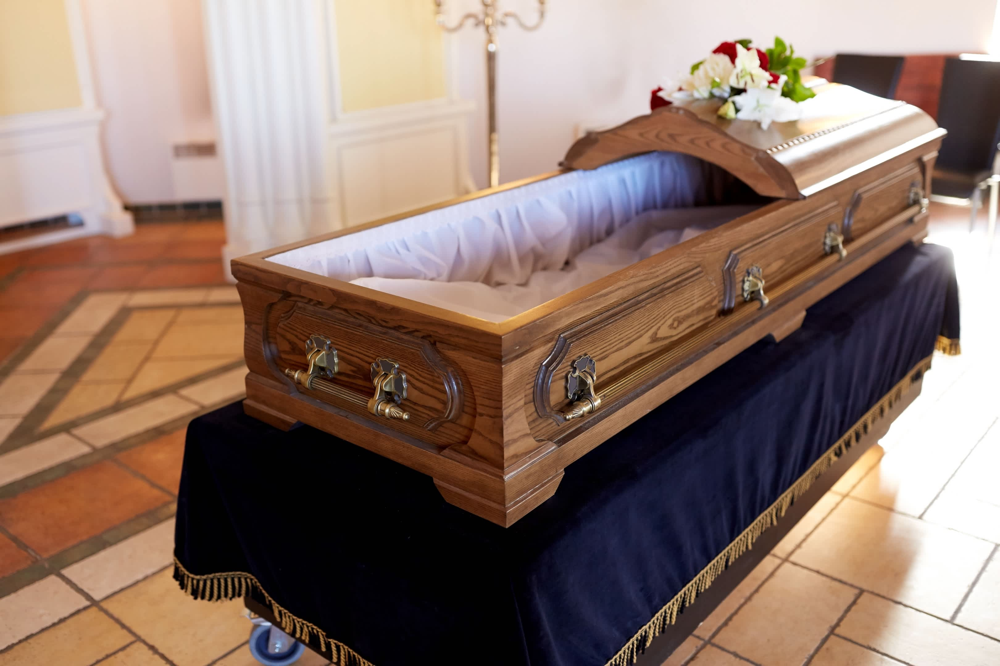

Hecho de roble macizo, acabado barnizado brillante, con detalles tallados a mano. Interior acolchado en satén blanco. Ideal para servicios funerarios tradicionales. Breve descripción o fecha.
Ataúd de Madera de Nogal
Madera sólida y pesada, de tono oscuro y elegante. Acabado con barniz brillante y molduras talladas. Representa distinción y sobriedad.

Ataúd Ecológico de Mimbre
Fabricado a mano con mimbre natural y sin tratamientos químicos. 100% biodegradable. Opción sostenible para entierros ecológicos o naturales.
Ataúd de Pino Natural
Opción económica, de madera clara y sin tratamiento químico. Estilo sencillo, ideal para cremaciones o ceremonias ecológicas.
Ataúd de Cedro Aromático
Hecho con cedro rojo que desprende un aroma suave y natural. Color rojizo con vetas visibles. Ideal para quienes buscan un detalle sensorial.

Ataúd de Caoba Pulida
Lujo clásico. Madera exótica de color rojo oscuro, con terminación de alto brillo. Muy utilizado en funerales tradicionales de alto nivel.

Ataúd de Abeto Macizo
Madera liviana y resistente, con un tono claro. Acabado liso mate. Muy usada en zonas rurales o servicios de estilo rústico.

Ataúd de Haya con Detalles Modernos
Madera clara con vetas suaves, diseño contemporáneo y esquinas redondeadas. Ideal para ceremonias modernas y minimalistas.

Ataúd de Madera Recuperada
Fabricado con maderas recicladas o rescatadas (roble, castaño, etc.), tratadas para dar un acabado envejecido y rústico. Atractivo para quienes valoran la sostenibilidad.
Ataúd de Teca Tropical
Madera dura, resistente a la humedad y al paso del tiempo. Muy usado en climas húmedos o entierros en zonas costeras.